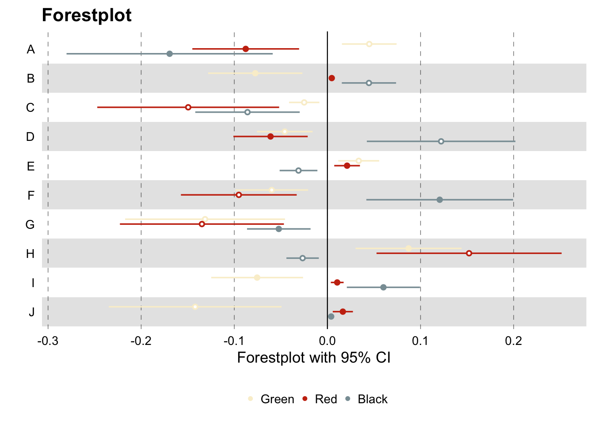
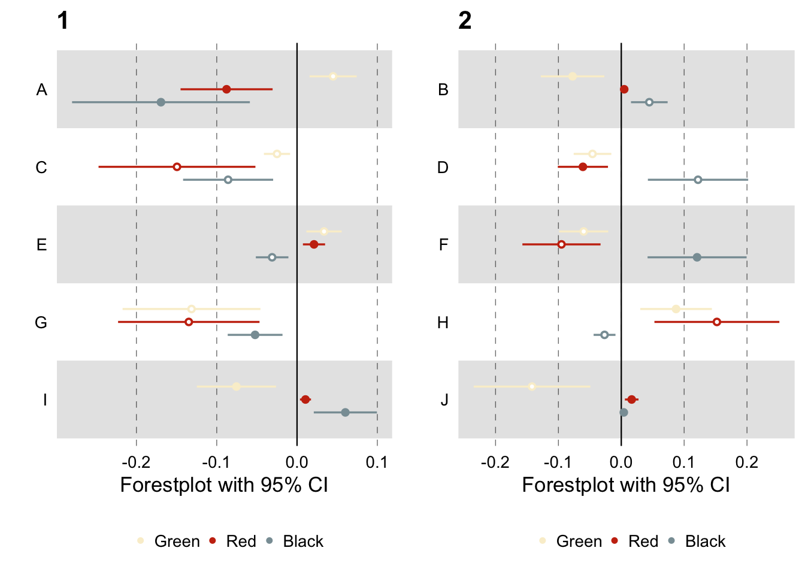

Page last updated: 04 May, 2019
Examples
For these plots we will use the basic data.
ggforestplot
The following packages are required to make the below forestplot: ggplot2 and ggforestplot. We also set two variables ci and psignif which act to set the confidence interval and significance threshold for the plot. If significance threshold is met then a solid point is plotted.
##### Packages
library(ggplot2)
library(ggforestplot)
##### Plotting variables
ci <- 0.95
psignif <- 0.05
##### Plot
forestplot(df = data,
name = name,
estimate = estimate,
se = se,
pvalue = p,
colour = group,
shape = NULL,
logodds = FALSE,
psignif = psignif,
ci = ci,
title = "Forestplot",
xlab = "Forestplot with 95% CI") +
scale_color_manual(values = discrete_wes_pal) +
theme(
legend.position = "bottom",
legend.title.align = 0,
legend.text.align = 0,
legend.title = element_blank(),
axis.title.x = element_text(hjust = 0.5)
)

ggforestplot loop
You can make multiple forestplots if you have groups or subgroups within your data frame using a for() loop. You can arrange the plots using the package cowplot and the function plot_grid().
##### Packages
library(cowplot)
##### Plotting variables
ci <- 0.95
psignif <- 0.05
plots <- list()
##### Plot
for (i in levels(data$subgroup)){
df <- subset(data, subgroup == i)
p <- forestplot(df = df,
name = name,
estimate = estimate,
se = se,
pvalue = p,
colour = group,
shape = NULL,
logodds = FALSE,
psignif = psignif,
ci = ci,
title = i,
xlab = "Forestplot with 95% CI") +
scale_color_manual(values = discrete_wes_pal) +
theme(
legend.position = "bottom",
legend.title.align = 0,
legend.text.align = 0,
legend.title = element_blank(),
axis.title.x = element_text(hjust = 0.5)
)
plot_name <- paste0("p",i)
plots[[plot_name]] <- p
}
##### Use cowplot to combine multiple plots
plot_grid(plots[["p1"]], plots[["p2"]], ncol = 2)

LS0tCnRpdGxlOiAiRm9yZXN0cGxvdHMiCm91dHB1dDoKICBodG1sX2RvY3VtZW50OgogICAgdG9jOiBmYWxzZQogICAgbnVtYmVyX3NlY3Rpb25zOiBmYWxzZQogICAgZGZfcHJpbnQ6IHBhZ2VkCiAgICBjb2RlX2Rvd25sb2FkOiB0cnVlCiAgICBoaWdobGlnaHRlcjogbnVsbAotLS0KCmBgYHtyIHNldHVwLCBldmFsPVRSVUUsIGluY2x1ZGU9RkFMU0UsIGVjaG89RkFMU0UsIGVycm9yPUZBTFNFLCBtZXNzYWdlPUZBTFNFLCB3YXJuaW5nPUZBTFNFLCBjYWNoZT1UUlVFLCBmaWcuYWxpZ249J2NlbnRlcicsIGNvbW1lbnQ9IiJ9CmNob29zZUNSQU5taXJyb3IoZ3JhcGhpY3M9RkFMU0UsIGluZD0xMzMpCnNvdXJjZSgic291cmNlL3Bsb3RzLW92ZXJ2aWV3LlIiKQpgYGAKX19fCgpQYWdlIGxhc3QgdXBkYXRlZDogYHIgZm9ybWF0KFN5cy50aW1lKCksICclZCAlQiwgJVknKWAKClwgIAoKIyBFeGFtcGxlcyB7I2ZvcmVzdHBsb3QgLnRhYnNldH0KCkZvciB0aGVzZSBwbG90cyB3ZSB3aWxsIHVzZSB0aGUgW2Jhc2ljIGRhdGFdKCNzaW1wbGVfZGF0YSkuCgpgYGB7ciBldmFsPVRSVUUsIGluY2x1ZGU9VFJVRSwgZWNobz1GQUxTRSwgZXJyb3I9RkFMU0UsIG1lc3NhZ2U9RkFMU0UsIHdhcm5pbmc9RkFMU0UsIGNhY2hlPVRSVUUsIGZpZy5hbGlnbj0nY2VudGVyJywgY29tbWVudD0iIn0KaGVhZChkYXRhKQpgYGAKClwgIAoKIyMgZ2dmb3Jlc3RwbG90IHsjZ2dmb3Jlc3RwbG90fQpUaGUgZm9sbG93aW5nIHBhY2thZ2VzIGFyZSByZXF1aXJlZCB0byBtYWtlIHRoZSBiZWxvdyBmb3Jlc3RwbG90OiBgZ2dwbG90MmAgYW5kIGBnZ2ZvcmVzdHBsb3RgLiBXZSBhbHNvIHNldCB0d28gdmFyaWFibGVzIGBjaWAgYW5kIGBwc2lnbmlmYCB3aGljaCBhY3QgdG8gc2V0IHRoZSBjb25maWRlbmNlIGludGVydmFsIGFuZCBzaWduaWZpY2FuY2UgdGhyZXNob2xkIGZvciB0aGUgcGxvdC4gSWYgc2lnbmlmaWNhbmNlIHRocmVzaG9sZCBpcyBtZXQgdGhlbiBhIHNvbGlkIHBvaW50IGlzIHBsb3R0ZWQuCgpgYGB7ciBnZ2ZvcmVzdHBsb3QsIGV2YWw9VFJVRSwgaW5jbHVkZT1UUlVFLCBlY2hvPVRSVUUsIGVycm9yPUZBTFNFLCBtZXNzYWdlPUZBTFNFLCB3YXJuaW5nPUZBTFNFLCBjYWNoZT1UUlVFLCBmaWcuYWxpZ249J2NlbnRlcicsIGNvbW1lbnQ9IiJ9CiMjIyMjIFBhY2thZ2VzCmxpYnJhcnkoZ2dwbG90MikKbGlicmFyeShnZ2ZvcmVzdHBsb3QpCgojIyMjIyBQbG90dGluZyB2YXJpYWJsZXMKY2kgPC0gMC45NQpwc2lnbmlmIDwtIDAuMDUKCiMjIyMjIFBsb3QKZm9yZXN0cGxvdChkZiA9IGRhdGEsIAogICAgICAgICAgIG5hbWUgPSBuYW1lLCAKICAgICAgICAgICBlc3RpbWF0ZSA9IGVzdGltYXRlLCAKICAgICAgICAgICBzZSA9IHNlLCAKICAgICAgICAgICBwdmFsdWUgPSBwLCAKICAgICAgICAgICBjb2xvdXIgPSBncm91cCwgCiAgICAgICAgICAgc2hhcGUgPSBOVUxMLCAKICAgICAgICAgICBsb2dvZGRzID0gRkFMU0UsIAogICAgICAgICAgIHBzaWduaWYgPSBwc2lnbmlmLCAKICAgICAgICAgICBjaSA9IGNpLCAKICAgICAgICAgICB0aXRsZSA9ICJGb3Jlc3RwbG90IiwKICAgICAgICAgICB4bGFiID0gIkZvcmVzdHBsb3Qgd2l0aCA5NSUgQ0kiKSArCiAgc2NhbGVfY29sb3JfbWFudWFsKHZhbHVlcyA9IGRpc2NyZXRlX3dlc19wYWwpICsKICB0aGVtZSgKICAgIGxlZ2VuZC5wb3NpdGlvbiA9ICJib3R0b20iLAogICAgbGVnZW5kLnRpdGxlLmFsaWduID0gMCwKICAgIGxlZ2VuZC50ZXh0LmFsaWduID0gMCwKICAgIGxlZ2VuZC50aXRsZSA9IGVsZW1lbnRfYmxhbmsoKSwKICAgIGF4aXMudGl0bGUueCA9IGVsZW1lbnRfdGV4dChoanVzdCA9IDAuNSkKICApIApgYGAKClwgIAoKIyMgZ2dmb3Jlc3RwbG90IGxvb3AgeyNnZ2ZvcmVzdHBsb3RfbG9vcH0KCllvdSBjYW4gbWFrZSBtdWx0aXBsZSBmb3Jlc3RwbG90cyBpZiB5b3UgaGF2ZSBncm91cHMgb3Igc3ViZ3JvdXBzIHdpdGhpbiB5b3VyIGRhdGEgZnJhbWUgdXNpbmcgYSBgZm9yKClgIGxvb3AuIFlvdSBjYW4gYXJyYW5nZSB0aGUgcGxvdHMgdXNpbmcgdGhlIHBhY2thZ2UgYGNvd3Bsb3RgIGFuZCB0aGUgZnVuY3Rpb24gYHBsb3RfZ3JpZCgpYC4KCmBgYHtyIGdnZm9yZXN0cGxvdF9sb29wLCBldmFsPVRSVUUsIGluY2x1ZGU9VFJVRSwgZWNobz1UUlVFLCBlcnJvcj1GQUxTRSwgbWVzc2FnZT1GQUxTRSwgd2FybmluZz1GQUxTRSwgY2FjaGU9VFJVRSwgZmlnLmFsaWduPSdjZW50ZXInLCBjb21tZW50PSIifQojIyMjIyBQYWNrYWdlcwpsaWJyYXJ5KGNvd3Bsb3QpCgojIyMjIyBQbG90dGluZyB2YXJpYWJsZXMKY2kgPC0gMC45NQpwc2lnbmlmIDwtIDAuMDUKcGxvdHMgPC0gbGlzdCgpCgojIyMjIyBQbG90CmZvciAoaSBpbiBsZXZlbHMoZGF0YSRzdWJncm91cCkpewogIGRmIDwtIHN1YnNldChkYXRhLCBzdWJncm91cCA9PSBpKQoKIHAgPC0gZm9yZXN0cGxvdChkZiA9IGRmLCAKICAgICAgICAgICBuYW1lID0gbmFtZSwgCiAgICAgICAgICAgZXN0aW1hdGUgPSBlc3RpbWF0ZSwgCiAgICAgICAgICAgc2UgPSBzZSwgCiAgICAgICAgICAgcHZhbHVlID0gcCwgCiAgICAgICAgICAgY29sb3VyID0gZ3JvdXAsIAogICAgICAgICAgIHNoYXBlID0gTlVMTCwgCiAgICAgICAgICAgbG9nb2RkcyA9IEZBTFNFLCAKICAgICAgICAgICBwc2lnbmlmID0gcHNpZ25pZiwgCiAgICAgICAgICAgY2kgPSBjaSwgCiAgICAgICAgICAgdGl0bGUgPSBpLAogICAgICAgICAgIHhsYWIgPSAiRm9yZXN0cGxvdCB3aXRoIDk1JSBDSSIpICsKICAgICBzY2FsZV9jb2xvcl9tYW51YWwodmFsdWVzID0gZGlzY3JldGVfd2VzX3BhbCkgKwogIHRoZW1lKAogICAgbGVnZW5kLnBvc2l0aW9uID0gImJvdHRvbSIsCiAgICBsZWdlbmQudGl0bGUuYWxpZ24gPSAwLAogICAgbGVnZW5kLnRleHQuYWxpZ24gPSAwLAogICAgbGVnZW5kLnRpdGxlID0gZWxlbWVudF9ibGFuaygpLAogICAgYXhpcy50aXRsZS54ID0gZWxlbWVudF90ZXh0KGhqdXN0ID0gMC41KQogICkgCgogIAogIHBsb3RfbmFtZSA8LSBwYXN0ZTAoInAiLGkpCiAgcGxvdHNbW3Bsb3RfbmFtZV1dIDwtIHAKfQoKIyMjIyMgVXNlIGNvd3Bsb3QgdG8gY29tYmluZSBtdWx0aXBsZSBwbG90cwpwbG90X2dyaWQocGxvdHNbWyJwMSJdXSwgcGxvdHNbWyJwMiJdXSwgbmNvbCA9IDIpCmBgYAoK